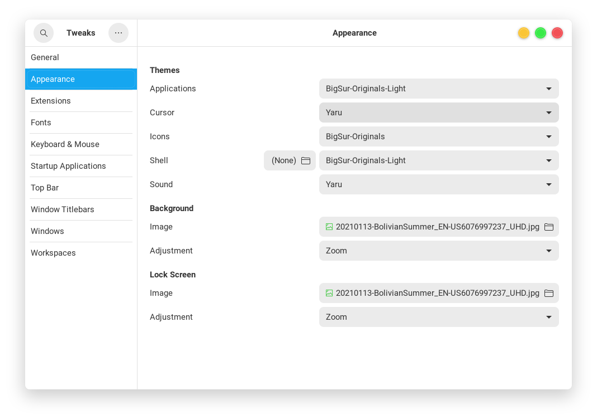
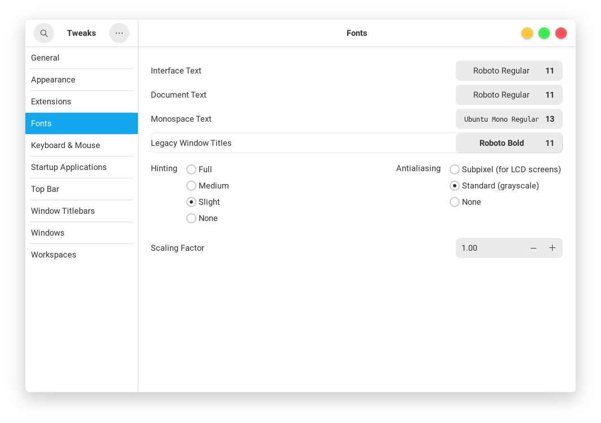

Customize Ubuntu
Make Linux look like Mac
Check the desktop Environment
echo $XDG_CURRENT_DESKTOP
ubuntu:GNOME
Install GNOME Tweaks
sudo apt install gnome-tweaks
Install GNOME extensions
- Go to the website GNOME extensions
- Install the browser add-on
- Install User Themes extension from the website
Install macOS theme
BigSur GTK3 Theme ~/.local/share/themes/
BigSur Icons ~/.local/share/icons/
Big Sur Cursors ~/.local/.icons/
Change theme in GNOME Tweaks > Appearance 
Install Fonts

Reference: How to Make Ubuntu Look Like macOS in 5 Easy Steps
Settings
- Appearance
- Auto-hide the Dock
- Position on screen: Left
- Display
- Night Light
- Universal Access
- Large Text
- Cursor Size: Large
GNOME Extensions
- Applications Menu
- Bing Wallpaper
- Lock Screen -> Background blur intensity: 2, Background brightness: 50
- Control Blur Effect On Lock Screen
- Adjust Sigma: 0, Adjust Brightness: 0
- gTile
- Preset resize 1: 4x1 0:0 0:0
- Preset resize 2: 4x1 1:0 2:0
- Preset resize 3: 4x1 3:0 3:0
- OpenWeather
- Screenshot Tool
- User Themes
- Window List